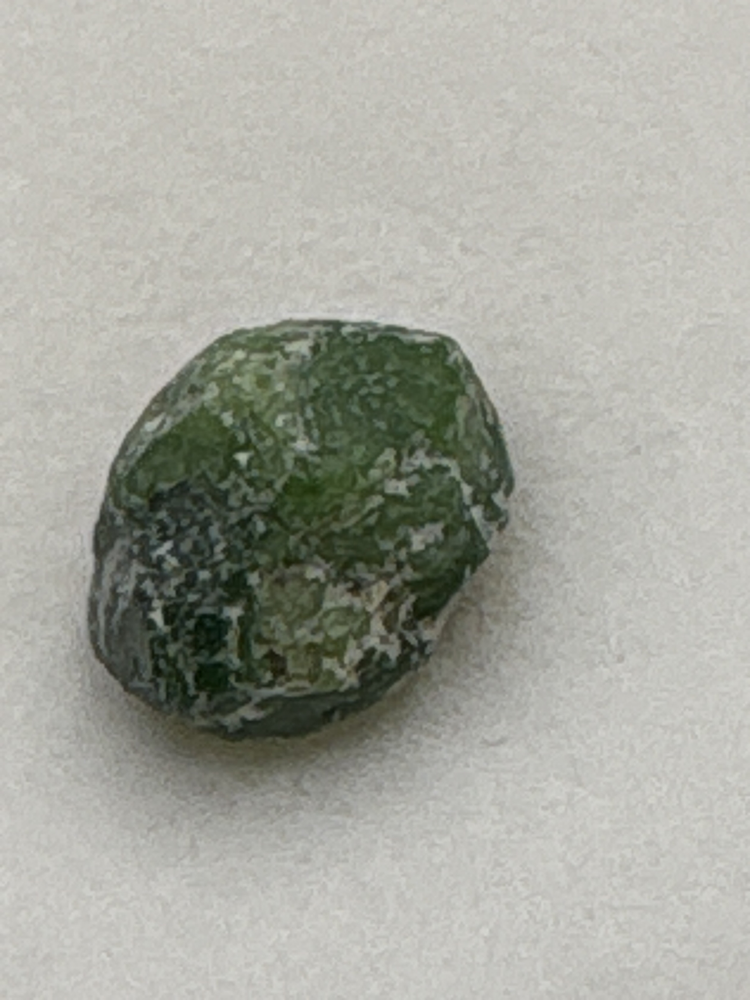

The Gem Drawer › No. 39

A small uncut olive-green crystal labeled demantoid.
| Catalogue no. | #39 |
|---|---|
| As labeled | Demantoid Garnet (AS LABELED, RAW/ROUGH single crystal - recommend professional verification given potential value, see notes) |
| Shape / cut | Raw/uncut natural crystal form (not faceted) |
| Weight | Not recorded |
| Measurements | Not recorded |
| Colour | Olive green |
| Clarity / condition | Not recorded |